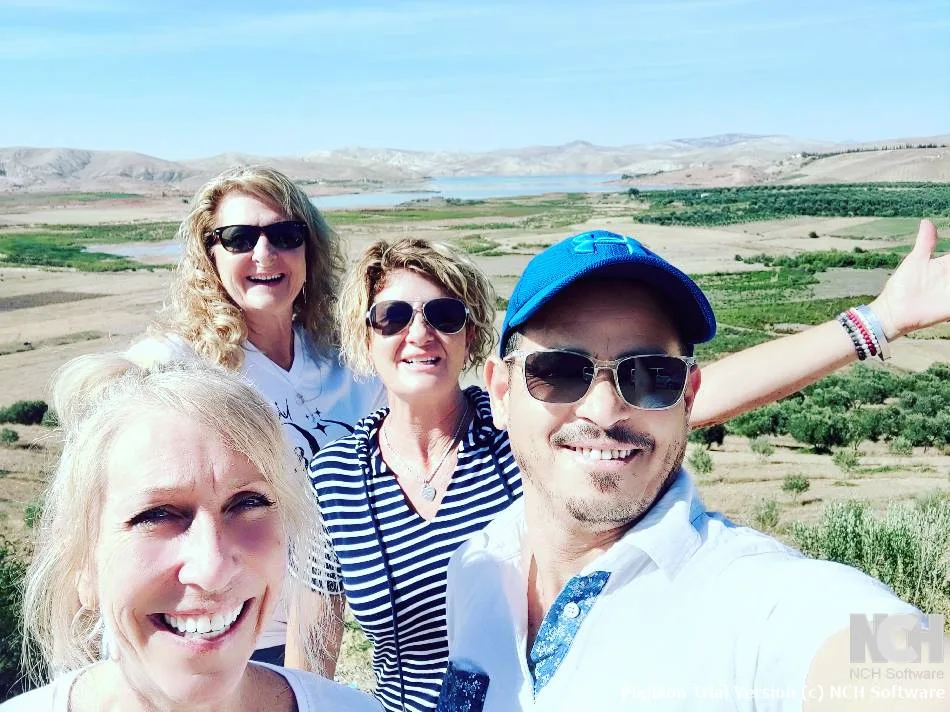

Mountain guides
Our guides know the trails, villages and weather of the Atlas. They adapt the pace to your group.
OUR STORY
Based in Marrakech at the foot of the High Atlas, Morocco Explorer Tours takes you walking in the mountains, to meet the villages that bring them to life.

WALK WITH PEOPLE WHO LIVE HERE
A good trip means a route matched to your fitness, realistic stages and time to enjoy the villages. We plan every trip with you: level, season, equipment and pace.
On the trail you walk with a mountain guide, mules carry the luggage and you sleep in gîtes, refuges or with families who open their homes to you.
From a day in Imlil to four days to the summit of Toubkal, every trip is private and organised for your group.
Tell us about your plans ↗Our guides know the trails, villages and weather of the Atlas. They adapt the pace to your group.
Walking times, altitude, seasonal conditions: you know what to expect before you book.
Gîtes, host families and valley muleteers: your trip also benefits the people who welcome you.
YOUR ATLAS TRIP
A date, a fitness level, a summit or a village in mind. Let’s plan your trip together.